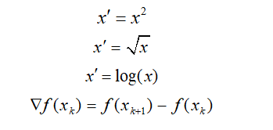

简单函数变换是对原始数据进行某些数学函数变换，常用的变换包括平方、开方、对数变换、差分运算等，即：

简单函数变换常用来将不具有正态分布的数据变成具有正态分布的数据。在时间序列分析中，有时简单的对数变换或差分运算就可以将非平稳序列转换成平稳序列；在数据挖掘中，简单函数变换更有需要，比如各种口红的评论数的取值范围为几十条条到上万条，这是一个较大的区间，使用对数变换对其进行压缩是一种常用的变换处理方法。
（1）对数变换
对数变换是较为常用的简单函数变换，需要注意的是当待变换的数值为0时，对这样的数据进行对 数变换没有意义，因此要根据具体情况采取措施防止这种情况的发生。
（2）BOX-COX变换
综合对数变换、平方根变换和平方变换，可归纳为一种应用十分广泛的变换族即为BOX-COX变换，它是对因变量所作如下变换：
其中，是待定参数，此变换要求y的各分量都大于0，否则可用下面推广的BOX-COX变换”
即先对y做平移，使得y+a的各个分量都大于0后再做BOX-COX变换
当=0时，则对应的是对数变换；当=0.5时，则对应的是平方根变换；当=2时，则对应的是平方变换。
通过此变换，我们寻找适当的，使得变换后
从而符合线性回归模型的各种假设：误差各分量等方差、不相关等。事实上，BOX-COX变换不仅可以处理异方差问题，还能处理自相关、误差非正态、回归函数非线性等情况。
（3）差分运算
在时间序列分析中，在进行AR、MA或ARMA等模型建模时，通常需要序列是平稳的(时序图呈现在某值附近随机波动即可认为平稳)。然而，在实际建模过程中，非平稳序列占大多数，此时就需要我们通过差分运算将其转化为平稳序列。
差分运算分为两种：p阶差分和k步差分。相距一期的两个序列值之间的减法运算称为一阶差分，对1阶差分后的序列再进行一次1阶差分运算则称为2阶差分..以此类推，对p-1阶差分运算后序列再进行一次1阶差分运算则称为p阶差分；而相距k期的两个序列值之间的减法运算则称为k步差分。